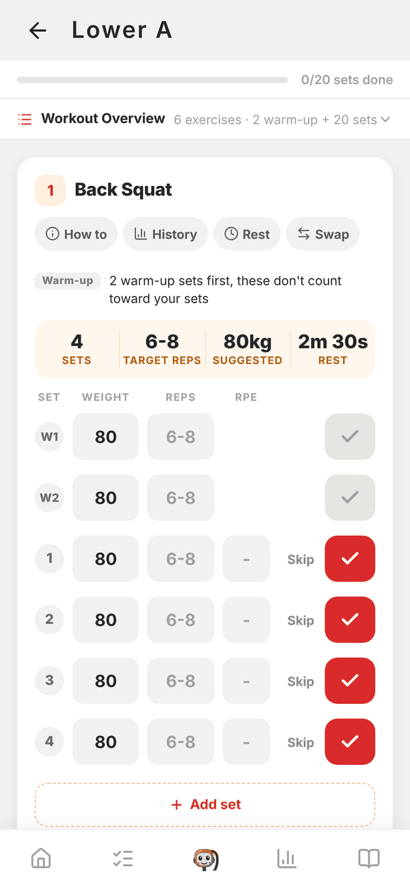
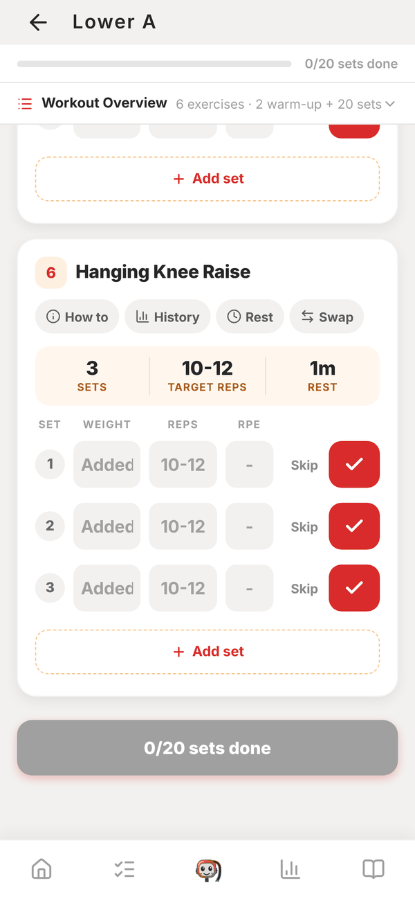
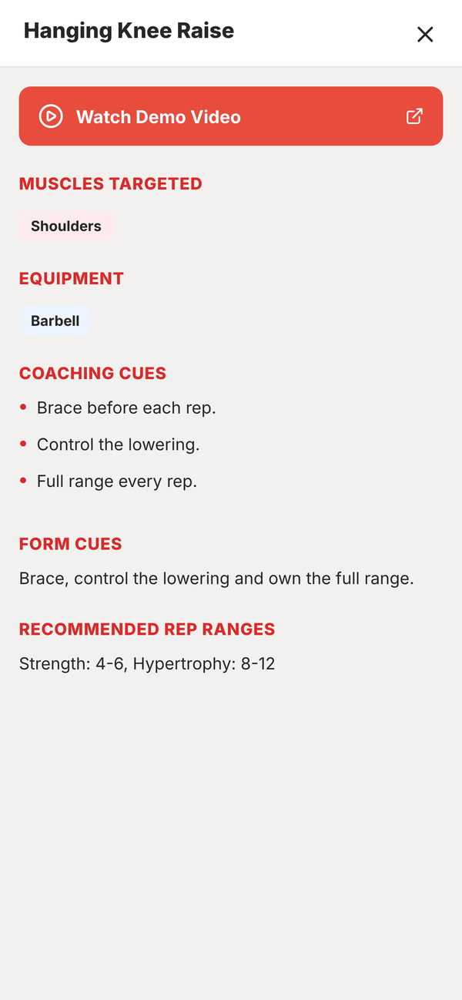
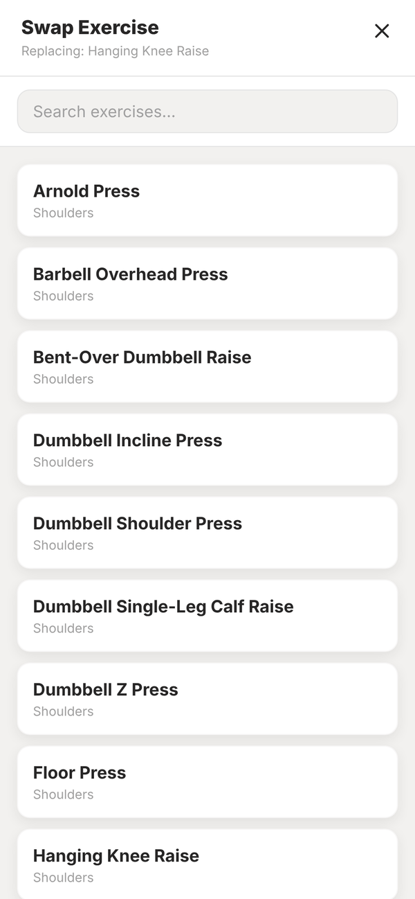

Totality Training guide
Doing a workout
Log each set as you go, with demos, your history, a rest timer and swaps for any exercise.
Tap Start workout on Home, or tap a workout on Train. The workout screen has everything you need between sets.


Warm up first#
A Warm up first card sits at the top of every workout. Get warm for a few minutes, then do three lighter ramp-up sets of your first lift: about half your working weight for 8, about 70% for 5, and about 85% for 2 to 3, resting about a minute between them. It doesn't count toward your sets.
While a workout is running the tabs along the bottom are hidden, and going back asks Leave this workout? first, so a stray tap can't close it.
Log your sets#
Each exercise shows its sets, target reps, a suggested weight and the rest time. The weight is filled in from last time, and when a weight has gone up it is already filled in for you Training.
- Do the warm-up sets marked W1 and W2 first. They don't count toward your sets.
- Do a set, check the weight and enter the reps you did. Add how hard it was as RPE if you like (0 to 10, where 10 is nothing left).
- Tap the tick to mark the set done. Tap Skip for a set you did not do.
- Tap Add set for an extra set.
- When every set is done, tap the finish button at the bottom to save the workout.
The bar at the top shows how many sets are done. Tap Workout Overview to see every exercise in the workout, with its sets.
The buttons on each exercise#


- How to shows the muscles worked, the equipment, coaching cues, form cues and rep ranges, with a link to the demo video.
- History shows what you did on this exercise before.
- Rest starts the rest timer.
- Swap replaces the exercise with another. The list shows exercises for the same muscles that you can do with your kit, closest first. Then pick Just today (your programme stays as it is) or Every week (it changes in this workout and every later one with that exercise; workouts you have already logged stay as they were).
- Calculator opens the rep max calculator for this exercise. See Progress.
Questions#
Can I finish with sets not done?
Mark each set done or tap Skip on it first. The app asks you to before it saves.
I logged the wrong weight.
Fix the number before you finish. After saving, the workout is in Workout history.